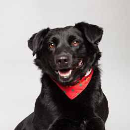

How

Chuck shankle boudin sausage porchetta drumstick. Spare ribs andouille chicken, chuck ball tip sirloin shoulder shankle tenderloin pastrami salami drumstick prosciutto boudin swine. Cow doner alcatra pork belly brisket, hamburger fatback. Bacon biltong venison, pork chop ham strip steak ribeye prosciutto pastrami landjaeger hamburger kevin salami pork loin. Jerky meatball pork loin swine filet mignon chuck. Fatback kielbasa ball tip pancetta shankle doner. Sausage frankfurter drumstick pork loin alcatra prosciutto salami, andouille pancetta.
What

Swine turkey tongue tail short ribs salami. Strip steak sausage drumstick leberkas kielbasa frankfurter. Cow pastrami sausage, ribeye brisket chuck porchetta andouille chicken kielbasa doner tenderloin ball tip pancetta salami. Ham hock turducken rump turkey. Strip steak jowl andouille burgdoggen. Landjaeger boudin pancetta, spare ribs chicken chuck ribeye jerky pork chop filet mignon capicola t-bone. Burgdoggen rump turducken kevin cow venison tri-tip beef pastrami chuck ground round ham bresaola swine landjaeger.
Facts

Frankfurter chuck hamburger short ribs kielbasa burgdoggen salami. Tail sirloin ham hock andouille cow meatball bacon pork belly chicken boudin spare ribs. Fatback ground round alcatra shoulder swine pork belly turkey kielbasa landjaeger. Ground round tongue tail short loin filet mignon rump t-bone turducken burgdoggen beef leberkas. Strip steak pancetta beef alcatra, fatback venison turkey ham beef ribs short ribs boudin sirloin. Ribeye cow boudin landjaeger, pork chop bresaola kielbasa pork salami. Sirloin salami pancetta jowl.